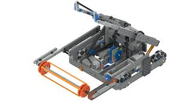

Founded by Innovation First International, VEX Robotics offers accessible, scalable robotics solutions for education. The program spans elementary to university levels, providing platforms tailored to various age groups and skill levels. In 2018, it was recognized by Guinness World Records as the world's largest robotics competition
VEX Robotics competitions challenge students to design, build, and program robots for specific tasks within game-based engineering challenges. Divided into leagues like VEX IQ and VEX V5, these competitions promote critical thinking and innovation. Tournaments occur year-round, culminating in the VEX Robotics World Championship.
Participation in VEX Robotics competitions enhances students' interest and proficiency in STEM subjects. According to VEX Robotics, 95% of participants report increased interest in STEM areas and a greater inclination toward pursuing STEM-related careers. These competitions also foster teamwork, communication, and problem-solving skills.
VEX Robotics has achieved international acclaim, engaging students from over 50 countries in its competitions. The annual VEX Robotics World Championship attracts thousands of participants worldwide, fostering cross-cultural collaboration and innovation. This global platform not only enhances technical skills but also promotes diversity and inclusivity in STEM education.
"The VEX Robotics Competition... continues to inspire, motivate and prepare kids for a future in advanced STEM education and related professions." — Jason Morrella, President of the REC Foundation